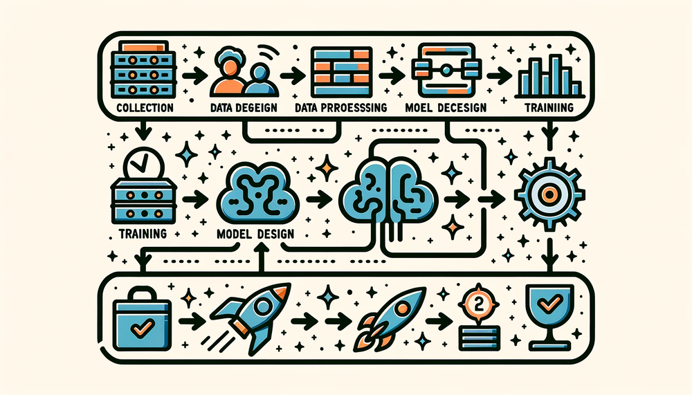

AI Workflow
DALL·E 3 Prompt: Create a rectangular illustration of a stylized flowchart representing the AI workflow/pipeline. From left to right, depict the stages as follows: ‘Data Collection’ with a database icon, ‘Data Preprocessing’ with a filter icon, ‘Model Design’ with a brain icon, ‘Training’ with a weight icon, ‘Evaluation’ with a checkmark, and ‘Deployment’ with a rocket. Connect each stage with arrows to guide the viewer horizontally through the AI processes, emphasizing these steps’ sequential and interconnected nature.

Purpose
What systematic framework guides the engineering of machine learning systems from initial development through production deployment?
Production machine learning systems require systematic thinking and structured frameworks. Workflows organize ML development into standardized stages: data collection, model development, validation, and deployment. These structured processes manage data quality and consistency, coordinate model training and experimentation, automate optimization pipelines, and orchestrate deployment across environments. These systematic approaches transform experimental intuition into engineering discipline, establishing the mental framework for ML systems. This disciplined foundation enables reproducible system development, quality standard maintenance, and informed decision-making across the entire ML lifecycle.
Compare ML lifecycle stages to traditional software development and identify fundamental differences
Analyze the six core ML lifecycle stages (problem definition through maintenance) and their interconnected feedback relationships
Apply systems thinking principles to trace how constraint propagation affects decisions across multiple lifecycle stages
Evaluate trade-offs between model performance and deployment constraints using specific quantitative metrics
Design data collection strategies that account for real-world deployment environments and operational requirements
Implement monitoring frameworks that capture multi-scale feedback loops from production ML systems
Assess the impact of problem definition decisions on subsequent model development and deployment choices
Construct deployment architectures that balance computational efficiency with performance requirements in resource-constrained environments
Systematic Framework for ML Development
Building upon Part I’s foundational principles (system characteristics, deployment environments, mathematical frameworks, and architectural patterns), this chapter advances from component-level analysis to system-level engineering. The transition from theoretical understanding to operational implementation requires a systematic framework governing production machine learning system development.
This chapter introduces the machine learning workflow as the governing methodology for systematic ML system development. Traditional software engineering proceeds through deterministic requirement-to-implementation pathways, while machine learning systems development exhibits fundamentally different characteristics. ML systems evolve through iterative experimentation1 where models extract patterns from data, performance metrics undergo statistical validation, and deployment constraints create feedback mechanisms that inform earlier development phases. This empirical, data-centric approach requires specialized workflow methodologies that accommodate uncertainty, coordinate parallel development streams, and establish continuous improvement mechanisms.
1 Scientific Method in ML Development: ML development follows scientific methodology more than traditional software engineering: hypothesize (model architecture choices), experiment (train and validate), analyze results (performance metrics), and iterate based on findings. This differs from deterministic software where requirements map directly to implementation. The “experiment-driven development” approach emerged from academic research labs in the 1990s-2000s but became essential for production ML when Google, Facebook, and others discovered that empirical validation outperformed theoretical predictions in complex, real-world systems.
The systematic framework presented here establishes the theoretical foundation for understanding Part II’s design principles. This workflow perspective clarifies the rationale for specialized data engineering pipelines (Chapter 6), the role of software frameworks in enabling iterative methodologies (Chapter 7), and the integration of model training within comprehensive system lifecycles (Chapter 8). Without this conceptual scaffolding, subsequent technical components appear as disparate tools rather than integrated elements within a coherent engineering discipline.
The chapter employs diabetic retinopathy screening system development as a pedagogical case study, demonstrating how workflow principles bridge laboratory research and clinical deployment. This example illustrates the intricate interdependencies among data acquisition strategies, architectural design decisions, deployment constraint management, and operational requirement fulfillment that characterize production-scale ML systems. These systematic patterns generalize beyond medical applications, exemplifying the engineering discipline required for reliable machine learning system operation across diverse domains.
Understanding the ML Lifecycle
The machine learning lifecycle is a structured, iterative process that guides the development, evaluation, and improvement of machine learning systems. This approach integrates systematic experimentation, evaluation, and adaptation over time (Amershi et al. 2019), building upon decades of structured development approaches (Chapman et al. 2000)2 while addressing the unique challenges of data-driven systems.
2 CRISP-DM (Cross-Industry Standard Process for Data Mining): A methodology developed in 1996 by a consortium including IBM, SPSS, and Daimler-Chrysler to provide a standard framework for data mining projects. CRISP-DM defined six phases: Business Understanding, Data Understanding, Data Preparation, Modeling, Evaluation, and Deployment. While predating modern ML, CRISP-DM established the iterative, data-centric workflow principles that evolved into today’s MLOps practices, influencing 90% of data mining projects by 2010 and serving as the foundation for ML lifecycle frameworks like Team Data Science Process (TDSP) and KDD.
3 Systems Thinking: A holistic approach to analysis that focuses on the ways that a system’s constituent parts interrelate and how systems work over time and within larger systems. Developed by MIT’s Jay Forrester in the 1950s for industrial dynamics, systems thinking became crucial for ML engineering because models, data, infrastructure, and operations interact in complex ways that produce emergent behaviors. Unlike traditional software where components can be optimized independently, ML systems require understanding interdependencies—how data quality affects model performance, how model complexity influences deployment constraints, and how monitoring insights drive system evolution.
Understanding this lifecycle requires a systems thinking3 approach recognizing four fundamental patterns: constraint propagation (how decisions in one stage influence all others), multi-scale feedback loops (how systems adapt across different timescales), emergent complexity (how system-wide behaviors differ from component behaviors), and resource optimization (how trade-offs create interdependencies). These patterns, explored throughout our diabetic retinopathy case study, provide the analytical framework for understanding why ML systems demand integrated engineering approaches rather than sequential component optimization.
Figure 1 visualizes this complete lifecycle through two parallel pipelines: the data pipeline (green, top row) transforms raw inputs through collection, ingestion, analysis, labeling, validation, and preparation into ML-ready datasets. The model development pipeline (blue, bottom row) takes these datasets through training, evaluation, validation, and deployment to create production systems. The critical insight lies in their interconnections—the curved feedback arrows show how deployment insights trigger data refinements, creating continuous improvement cycles that distinguish ML from traditional linear development.

This workflow framework serves as scaffolding for the technical chapters ahead. The data pipeline illustrated here receives comprehensive treatment in ?@sec-data-engineering, which addresses how to ensure data quality and manage data throughout the ML lifecycle. Model training expands into ?@sec-ai-training, covering how to efficiently train models at scale. The software frameworks that enable this iterative development process are detailed in ?@sec-ai-frameworks. Deployment and ongoing operations extend into ?@sec-ml-operations, addressing how systems maintain performance in production. This chapter establishes how these pieces interconnect before we explore each in depth—understanding the complete system makes the specialized components meaningful.
This chapter focuses on the conceptual stages of the ML lifecycle—the “what” and “why” of the development process. The operational implementation of this lifecycle through automation, tooling, and infrastructure—the “how”—is the domain of MLOps, which we will explore in detail in ?@sec-ml-operations. This distinction is crucial: the lifecycle provides the systematic framework for understanding ML development stages, while MLOps provides the operational practices for implementing these stages at scale. Understanding this lifecycle foundation makes the specialized MLOps tools and practices meaningful rather than appearing as disparate operational concerns.
ML vs Traditional Software Development
Machine learning requires specialized lifecycle approaches because ML development differs fundamentally from traditional software engineering. Traditional lifecycles consist of sequential phases: requirements gathering, system design, implementation, testing, and deployment (Royce 1987)4. Each phase produces specific artifacts that serve as inputs to subsequent phases. In financial software development, the requirements phase produces detailed specifications for transaction processing, security protocols, and regulatory compliance. These specifications translate directly into system behavior through explicit programming, contrasting sharply with the probabilistic nature of ML systems explored throughout ?@sec-introduction.
4 Waterfall Model: A sequential software development methodology introduced by Winston Royce in 1970, where development flows through distinct phases (requirements → design → implementation → testing → deployment) like water flowing down stairs. Each phase must be completed before the next begins, with formal documentation and approval gates. While criticized for inflexibility, waterfall dominated enterprise software development for decades and still suits projects with stable, well-understood requirements. The model’s linear approach contrasts starkly with ML development’s inherent uncertainty and need for experimentation.
5 ML-Based Fraud Detection Evolution: Traditional rule-based fraud systems had 60-80% accuracy and generated 10-40% false positives. Modern ML fraud detection achieves 85-95% accuracy with 1-5% false positive rates by analyzing hundreds of behavioral features (Arsene, Dumitrache, and Mihu 2015). However, this improvement comes with new challenges: fraudsters adapt to ML patterns within 3-6 months, requiring continuous model retraining that rule-based systems never needed (Arsene, Dumitrache, and Mihu 2015).
Machine learning systems require a fundamentally different approach. The deterministic nature of conventional software, where behavior is explicitly programmed, contrasts with the probabilistic nature of ML systems. Consider financial transaction processing: traditional systems follow predetermined rules (if account balance > transaction amount, then allow transaction), while ML-based fraud detection systems5 learn to recognize suspicious patterns from historical transaction data. This shift from explicit programming to learned behavior reshapes the development lifecycle, altering how we approach system reliability and robustness as detailed in ?@sec-robust-ai.
These fundamental differences in system behavior introduce new dynamics that alter how lifecycle stages interact. These systems require ongoing refinement through continuous feedback loops that enable insights from deployment to inform earlier development phases. Machine learning systems are inherently dynamic and must adapt to changing data distributions and objectives through continuous deployment6 practices.
6 Continuous Deployment: Software engineering practice where code changes are automatically deployed to production after passing automated tests, enabling multiple deployments per day instead of monthly releases. Popularized by companies like Netflix (2008) and Etsy (2009), continuous deployment reduces deployment risk through small, frequent changes rather than large, infrequent releases. However, ML systems require specialized continuous deployment because models need statistical validation, gradual rollouts with A/B testing, and rollback mechanisms based on performance metrics rather than just functional correctness.
7 Data Versioning Challenges: Unlike code, which changes through discrete edits, data can change gradually through drift, suddenly through schema changes, or subtly through quality degradation. Traditional version control systems like Git struggle with large datasets, leading to specialized tools like Git LFS and DVC.
These contrasts become clearer when we examine the specific differences across development lifecycle dimensions. The key distinctions are summarized in Table 1 below. These differences reflect the core challenge of working with data as a first-class citizen in system design, something traditional software engineering methodologies were not designed to handle7.
| Aspect | Traditional Software Lifecycles | Machine Learning Lifecycles |
|---|---|---|
| Problem Definition | Precise functional specifications are defined upfront. | Performance-driven objectives evolve as the problem space is explored. |
| Development Process | Linear progression of feature implementation. | Iterative experimentation with data, features and models. |
| Testing and | Deterministic, binary pass/fail | Statistical validation and metrics that |
| Validation | testing criteria. | involve uncertainty. |
| Deployment | Behavior remains static until explicitly updated. | Performance may change over time due to shifts in data distributions. |
| Maintenance | Maintenance involves modifying code to address bugs or add features. | Continuous monitoring, updating data pipelines, retraining models, and adapting to new data distributions. |
| Feedback Loops | Minimal; later stages rarely impact earlier phases. | Frequent; insights from deployment and monitoring often refine earlier stages like data preparation and model design. |
These six dimensions reveal a fundamental pattern: machine learning systems replace deterministic specifications with probabilistic optimization, static behavior with dynamic adaptation, and isolated development with continuous feedback. This shift explains why traditional project management approaches fail when applied to ML projects without modification.
Experimentation in machine learning differs fundamentally from testing in traditional software. In ML, experimentation constitutes the core development process itself, not simply bug detection. It involves systematically testing hypotheses about data sources, feature engineering approaches, model architectures, and hyperparameters to yield optimal performance. This represents a scientific process of discovery, not merely a quality assurance step. Traditional software testing verifies code behavior according to predetermined specifications, while ML experimentation explores uncertain spaces to discover optimal combinations producing the best empirical results.
These differences emphasize the need for robust ML lifecycle frameworks that accommodate iterative development, dynamic behavior, and data-driven decision-making. Understanding these distinctions enables examination of how ML projects unfold through their lifecycle stages, each presenting unique challenges that traditional software methodologies cannot adequately address.
This foundation enables exploration of the specific stages comprising the ML lifecycle and how they address these unique challenges.
Six Core Lifecycle Stages
AI systems require specialized development approaches. The specific stages that comprise the ML lifecycle provide this specialized framework. These stages operate as an integrated framework where each builds upon previous foundations while preparing for subsequent phases.
Moving from the detailed pipeline view in Figure 1, we now present a higher-level conceptual perspective. Figure 2 consolidates these detailed pipelines into six major lifecycle stages, providing a simplified framework for understanding the overall progression of ML system development. This abstraction helps us reason about the broader phases without getting lost in pipeline-specific details. Where the earlier figure emphasized the parallel processing of data and models, this conceptual view emphasizes the sequential progression through major development phases—though as we’ll explore, these phases remain interconnected through continuous feedback.
Figure 2 illustrates the six core stages that characterize successful AI system development: Problem Definition establishes objectives and constraints, Data Collection & Preparation encompasses the entire data pipeline, Model Development & Training covers model creation, Evaluation & Validation ensures quality, Deployment & Integration brings systems to production, and Monitoring & Maintenance ensures continued effectiveness. These stages operate through continuous feedback loops, with insights from later stages frequently informing refinements in earlier phases. This cyclical nature reflects the experimental and data-driven characteristics that distinguish ML development from conventional software engineering.

The lifecycle begins with problem definition and requirements gathering, where teams clearly define the problem to be solved, establish measurable performance objectives, and identify key constraints. Precise problem definition ensures alignment between the system’s goals and the desired outcomes, setting the foundation for all subsequent work.
Building on this foundation, the next stage assembles the data resources needed to realize these objectives. Data collection and preparation includes gathering relevant data, cleaning it, and preparing it for model training. This process involves curating diverse datasets, ensuring high-quality labeling, and developing preprocessing pipelines to address variations in the data. The complexities of this stage are explored in ?@sec-data-engineering.
With data resources in place, the development process creates models that can learn from these resources. Model development and training involves selecting appropriate algorithms, designing model architectures, and training models using the prepared data. Success depends on choosing techniques suited to the problem and iterating on the model design for optimal performance. Advanced training approaches and distributed training strategies are detailed in ?@sec-ai-training, while the underlying architectures are covered in ?@sec-dnn-architectures.
Once models are trained, rigorous evaluation ensures they meet performance requirements before deployment. This evaluation and validation stage involves rigorously testing the model’s performance against predefined metrics and validating its behavior in different scenarios, ensuring the model is accurate, reliable, and robust in real-world conditions.
With validation complete, models transition from development environments to operational systems through careful deployment processes. Deployment and integration requires addressing practical challenges such as system compatibility, scalability, and operational constraints across different deployment contexts ranging from cloud to edge environments, as explored in ?@sec-ml-systems.
The final stage recognizes that deployed systems require ongoing oversight to maintain performance and adapt to changing conditions. This monitoring and maintenance stage focuses on continuously tracking the system’s performance in real-world environments and updating it as necessary. Effective monitoring ensures the system remains relevant and accurate over time, adapting to changes in data, requirements, or external conditions.
Case Study: Diabetic Retinopathy Screening System
To ground these lifecycle principles in reality, we examine the development of diabetic retinopathy (DR) screening systems from initial research to widespread clinical deployment (Gulshan et al. 2016). Throughout this chapter, we use this case as a pedagogical vehicle to demonstrate how lifecycle stages interconnect in practice, showing how decisions in one phase influence subsequent stages.
Note: While this narrative draws from documented experiences with diabetic retinopathy screening deployments, including Google’s work, we have adapted and synthesized details to illustrate common challenges encountered in healthcare AI systems. Our goal is educational—demonstrating lifecycle principles through a realistic example—rather than providing a documentary account of any specific project. The technical choices, constraints, and solutions presented represent typical patterns in medical AI development that illuminate broader systems thinking principles.
From Research Success to Clinical Reality
The DR screening challenge initially appeared straightforward: develop an AI system to analyze retinal images and detect signs of diabetic retinopathy with accuracy comparable to expert ophthalmologists. Initial research results achieved expert-level performance in controlled laboratory conditions. However, the journey from research success to clinical impact revealed AI lifecycle complexity, where technical excellence must integrate with operational realities, regulatory requirements, and real-world deployment constraints.
The scale of this medical challenge explains why AI-assisted screening became medically essential, not merely technically interesting. Diabetic retinopathy affects over 100 million people worldwide and represents a leading cause of preventable blindness8. Figure 3 shows the clinical challenge: distinguishing healthy retinas from those showing early signs of retinopathy, such as the characteristic hemorrhages visible as dark red spots. While this appears to be a straightforward image classification problem, the path from laboratory success to clinical deployment illustrates every aspect of the AI lifecycle complexity.
8 Diabetic Retinopathy Global Impact: Affects approximately 93-103 million people worldwide, with 22.27% to 35% of diabetic patients developing some form of retinopathy (Steinmetz et al. 2024). In developing countries, up to 90% of vision loss from diabetes is preventable with early detection, but access to ophthalmologists remains severely limited: rural areas in India have approximately one ophthalmologist per 100,000-120,000 people, compared to the WHO recommendation of 1 per 20,000 (Steinmetz et al. 2024). This stark disparity makes AI-assisted screening not just convenient but potentially life-changing for millions (Rajkomar, Dean, and Kohane 2019).

Systems Engineering Lessons
DR system development illustrates fundamental AI systems principles across lifecycle stages. Challenges with data quality lead to innovations in distributed data validation. Infrastructure constraints in rural clinics drive breakthroughs in edge computing9 optimization. Integration with clinical workflows reveals the importance of human-AI collaboration design. These experiences demonstrate that building robust AI systems requires more than accurate models; success demands systematic engineering approaches that address real-world deployment complexity.
9 Edge Computing: Distributed computing paradigm that processes data near the source rather than in centralized cloud data centers, reducing latency from 50-500ms (cloud) to 5-50ms (edge) depending on the application. Originally developed for CDNs (1990s), edge computing became essential for ML when real-time applications like autonomous vehicles and medical devices required sub-20ms response times that cloud computing couldn’t achieve (Shi et al. 2016). The edge AI market grew from approximately $1.12B in 2018 to $8.2B in 2023, driven by IoT devices generating an estimated 73-80 zettabytes of data annually by 2025 that cannot be efficiently transmitted to cloud servers.
10 Healthcare AI Deployment Reality: Studies show that 75-80% of healthcare AI projects never reach clinical deployment (Chen and Asch 2017), with the majority failing not due to algorithmic issues but due to integration challenges, regulatory hurdles, and workflow disruption. The “AI chasm” between research success and clinical adoption is particularly wide in healthcare: while medical AI papers show 95%+ accuracy rates, real-world implementation studies report significant performance drops due to data drift, equipment variations, and user acceptance issues (Kelly et al. 2019).
This comprehensive journey through real-world deployment challenges reflects broader patterns in healthcare AI development. Throughout each lifecycle stage, the DR case study demonstrates how decisions made in early phases influence later stages, how feedback loops drive continuous improvement, and how emergent system behaviors require holistic solutions. These deployment challenges reflect broader issues in healthcare AI10 that affect most real-world medical ML applications.
This narrative thread demonstrates how the AI lifecycle’s integrated nature requires systems thinking from the beginning. The DR case shows that sustainable AI systems emerge from understanding and designing for complex interactions between all lifecycle stages, rather than from optimizing individual components in isolation.
With this framework and case study established, examination of each lifecycle stage begins with problem definition.
Problem Definition Stage
Machine learning system development begins with a challenge distinct from traditional software development: defining not just what the system should do, but how it should learn to do it. Conventional software requirements translate directly into implementation rules, while ML systems require teams to consider how the system will learn from data while operating within real-world constraints11. This first stage shown in Figure 2 lays the foundation for all subsequent phases in the ML lifecycle.
11 ML vs. Traditional Problem Definition: Traditional software problems are defined by deterministic specifications (“if input X, then output Y”), but ML problems are defined by examples and desired behaviors. This shift means that Studies suggest 60-80% of ML projects fail, with many failures occurring during problem formulation and requirements phases, compared to lower failure rates in traditional software projects (Maor 1987). The challenge lies in translating business objectives into learning objectives—something that didn’t exist in software engineering until the rise of data-driven systems in the 2000s (Amershi et al. 2019).
The DR screening example illustrates how this complexity manifests in practice. A diabetic retinopathy screening system’s problem definition reveals complexity beneath an apparently straightforward medical imaging task. What initially appeared straightforward computer vision actually required defining multiple interconnected objectives that shaped every subsequent lifecycle stage.
Development teams balance competing constraints in such systems: diagnostic accuracy for patient safety, computational efficiency for rural clinic hardware, workflow integration for clinical adoption, regulatory compliance for medical device approval, and cost-effectiveness for sustainable deployment. Each constraint influences the others, creating a complex optimization problem that traditional software development approaches cannot address. This multi-dimensional problem definition drives data collection strategies, model architecture choices, and deployment infrastructure decisions throughout the project lifecycle.
Balancing Competing Constraints
Problem definition decisions cascade through system design. Requirements analysis in a DR screening system evolves from initial focus on diagnostic accuracy metrics to encompass deployment environment constraints and opportunities.
Achieving 90%+ sensitivity for detecting referable diabetic retinopathy prevents vision loss, while maintaining 80%+ specificity avoids overwhelming referral systems with false positives. These metrics must be achieved across diverse patient populations, camera equipment, and image quality conditions typical in resource-limited settings.
Rural clinic deployments impose strict constraints reflecting edge deployment challenges from ?@sec-ml-systems: models must run on devices with limited computational power, operate reliably with intermittent internet connectivity, and produce results within clinical workflow timeframes. These systems require operation by healthcare workers with minimal technical training.
Medical device regulations require extensive validation, audit trails, and performance monitoring capabilities that influence data collection, model development, and deployment strategies.
These interconnected requirements demonstrate how problem definition in ML systems requires understanding the complete ecosystem in which the system will operate. Early recognition of these constraints enables teams to make architecture decisions crucial for successful deployment, rather than discovering limitations after significant development investment.
Collaborative Problem Definition Process
Establishing clear and actionable problem definitions involves a systematic workflow that bridges technical, operational, and user considerations. The process begins with identifying the core objective of the system: what tasks it must perform and what constraints it must satisfy. Teams collaborate with stakeholders to gather domain knowledge, outline requirements, and anticipate challenges that may arise in real-world deployment.
In a DR-type project, this phase involves close collaboration with clinicians to determine the diagnostic needs of rural clinics. Key decisions, such as balancing model complexity with hardware limitations and ensuring interpretability for healthcare providers, emerge during this phase. The approach must account for regulatory considerations, such as patient privacy and compliance with healthcare standards. This collaborative process ensures that the problem definition aligns with both technical feasibility and clinical relevance.
Adapting Definitions for Scale
As ML systems scale, their problem definitions must adapt to new operational challenges12. A DR-type system might initially focus on a limited number of clinics with consistent imaging setups. However, as such a system expands to include clinics with varying equipment, staff expertise, and patient demographics13, the original problem definition requires adjustments to accommodate these variations.
12 ML System Scaling Complexity: Scaling ML systems is exponentially more complex than traditional software due to data heterogeneity, model drift, and infrastructure requirements. Studies show that ML systems typically require 5-10x more monitoring infrastructure than traditional applications (Paleyes, Urma, and Lawrence 2022), with companies like Uber running 1,000+ model quality checks daily across their ML platform (Hermann and Del Balso 2017). The “scaling wall” typically hits at 100+ models in production, where manual processes break down and teams need specialized MLOps platforms—explaining why the ML platform market grew from approximately $1.5B in 2019 to $15.5B in 2023, with MLOps tools representing a significant subset (Kreuzberger, Kühl, and Hirschl 2023).
13 Algorithmic Fairness in Healthcare: Medical AI systems show significant performance disparities across demographic groups—dermatology AI systems show significant performance disparities, with some studies reporting 10-36% worse accuracy on darker skin tones depending on the specific condition and dataset (Chin-Purcell and Chambers 2021), while diabetic retinopathy models trained primarily on European populations show 15-25% accuracy drops for Asian and African populations (Gulshan et al. 2016). The FDA’s 2021 Action Plan for AI/ML-based medical devices now requires demographic performance reporting (Food and Administration 2021), and companies like Google Health spend 20-30% of development resources on fairness testing and bias mitigation across racial, gender, and socioeconomic groups (Rajkomar, Dean, and Kohane 2019).
Scaling also introduces data challenges. Larger datasets may include more diverse edge cases, which can expose weaknesses in the initial model design. Expanding deployment to new regions introduces variations in imaging equipment and patient populations that require further system tuning. Defining a problem that accommodates such diversity from the outset ensures the system can handle future expansion without requiring a complete redesign.
In our DR example, the problem definition process shapes data collection strategy. Requirements for multi-population validation drive the need for diverse training data, while edge deployment constraints influence data preprocessing approaches. Regulatory compliance needs determine annotation protocols and quality assurance standards. These interconnected requirements demonstrate how effective problem definition anticipates constraints that will emerge in subsequent lifecycle stages, establishing a foundation for integrated system development rather than sequential, isolated optimization.
With clear problem definition established, the development process transitions to assembling the data resources needed to achieve these objectives.
Data Collection & Preparation Stage
Data collection and preparation represent the second stage in the ML lifecycle (Figure 2), where raw data is gathered, processed, and prepared for model development. This stage presents unique challenges extending beyond gathering sufficient training examples14. These challenges form the core focus of ?@sec-data-engineering. For medical AI systems like DR screening, data collection must balance statistical rigor with operational feasibility while meeting the highest standards for diagnostic accuracy.
14 The 80/20 Rule in ML: Data scientists typically spend 60-80% of their time on data collection, cleaning, and preparation, with the remainder on modeling and analysis. This ratio, first documented by CrowdFlower (CrowdFlower, n.d.) in 2016, remains consistent across industries despite advances in automated tools. The “data preparation tax” includes handling missing values (present in 90% of real-world datasets), resolving inconsistencies (affecting 60% of data fields), and ensuring legal compliance (requiring 15+ different consent mechanisms for EU data). This explains why successful ML teams invest heavily in data engineering capabilities from day one.
Problem definition decisions shape data requirements in the DR example. The multi-dimensional success criteria established (accuracy across diverse populations, hardware efficiency, and regulatory compliance) demand a data collection strategy that goes beyond typical computer vision datasets.
Building this foundation in such a system might require assembling a development dataset of 128,000 retinal fundus photographs, each reviewed by 3-7 expert ophthalmologists from a panel of 54 specialists15. This expert consensus approach addresses the inherent subjectivity in medical diagnosis while establishing ground truth labels that can withstand regulatory scrutiny. The annotation process captures clinically relevant features like microaneurysms, hemorrhages, and hard exudates across the spectrum of disease severity.
15 Medical Data Annotation Costs: Expert medical annotation is extraordinarily expensive: ophthalmologists charge $200-500 per hour, meaning the DR dataset’s annotation cost exceeded $2.7 million in expert time alone. This represents one of the highest annotation costs per sample in ML history, driving interest in active learning and synthetic data generation.
High-resolution retinal scans typically generate files ranging from 10-120 megabytes depending on resolution and compression, creating substantial infrastructure challenges. A typical clinic processing 50 patients daily generates 5-15 GB of imaging data per week depending on image quality and compression, quickly exceeding the capacity of rural internet connections (often limited to 2-10 Mbps upload speeds). This data volume constraint forces architectural decisions toward edge-computing solutions rather than cloud-based processing.
Bridging Laboratory and Real-World Data
Transitioning from laboratory-quality training data to real-world deployment reveals fundamental gaps when such a system moves to rural clinic settings.
When deployment begins in rural clinics across regions like Thailand and India, real-world data differs dramatically from carefully curated training sets. Images come from diverse camera equipment operated by staff with varying expertise levels, often under suboptimal lighting conditions and with inconsistent patient positioning. These variations threaten model performance and reveal the need for robust preprocessing and quality assurance systems.
This data volume constraint drives a fundamental architectural decision between the deployment paradigms discussed in ?@sec-ml-systems: edge computing deployment rather than cloud-based inference. Local preprocessing reduces bandwidth requirements by 95% (from 15 GB to 750 MB weekly transmission) but requires 10x more local computational resources, shaping both model optimization strategies and deployment hardware requirements using specialized edge devices like NVIDIA Jetson16.
16 NVIDIA Jetson: Series of embedded computing boards designed for AI edge computing, featuring GPU acceleration in power-efficient form factors (5-30 watts vs. 250+ watts for desktop GPUs). First released in 2014, Jetson modules enable real-time AI inference on devices like autonomous drones, medical equipment, and industrial robots. Popular models include Jetson Nano ($99, 472 GFLOPS), Jetson AGX Xavier ($699, 32 TOPS), and Jetson AGX Orin ($1,699, 275 TOPS), making high-performance AI accessible for edge deployment scenarios where cloud connectivity is unreliable or latency-critical.
A typical solution architecture emerges from data collection constraints: NVIDIA Jetson edge devices (2-32GB RAM, 64-2048 CUDA cores depending on model) for local inference, clinic aggregation servers (8-core CPUs, 32GB RAM) for data management, and cloud training infrastructure using 32-GPU clusters for weekly model updates. This distributed approach achieves sub-80ms inference latency with 94% uptime across deployments spanning 200+ clinic locations.
Patient privacy regulations require federated learning architecture, enabling model training without centralizing sensitive patient data. This approach adds complexity to both data collection workflows and model training infrastructure, but proves essential for regulatory approval and clinical adoption.
These experiences illustrate the constraint propagation principles we established earlier: lifecycle decisions in data collection create constraints and opportunities that propagate through the entire system development process, shaping everything from infrastructure design to model architecture.
Data Infrastructure for Distributed Deployment
Understanding how data characteristics and deployment constraints drive architectural decisions becomes critical at scale. Each retinal image follows a complex journey: capture on clinic cameras, local storage and initial processing, quality validation, secure transmission to central systems, and integration with training datasets.
Different data access patterns demand different storage solutions. Teams typically implement tiered approaches balancing cost, performance, and availability: frequently accessed training data requires high-speed storage for rapid model iteration, while historical datasets can tolerate slower access times in exchange for cost efficiency. Intelligent caching systems optimize data access based on usage patterns, ensuring that relevant data remains readily available.
Rural clinic deployments face significant connectivity constraints, requiring flexible data transmission strategies. Real-time transmission works well for clinics with reliable internet, while store-and-forward systems enable operation in areas with intermittent connectivity. This adaptive approach ensures consistent system operation regardless of local infrastructure limitations.
Infrastructure design must anticipate growth from pilot deployments to hundreds of clinics. The architecture accommodates varying data volumes, different hardware configurations, and diverse operational requirements while maintaining data consistency and system reliability. This scalability foundation proves essential as systems expand to new regions.
Managing Data at Scale
Applying systems thinking to scale, data collection challenges grow exponentially as ML systems expand. In our DR example, scaling from initial clinics to a broader network introduces emergent complexity: significant variability in equipment, workflows, and operating conditions. Each clinic effectively becomes an independent data node17, yet the system needs to ensure consistent performance across all locations. Following the collaborative coordination patterns established earlier, teams implement specialized orchestration with shared artifact repositories, versioned APIs, and automated testing pipelines that enable efficient management of large clinic networks.
17 Federated Learning Architecture: Federated learning (McMahan et al. 2017), introduced by Google in 2016 for mobile keyboards, enables training across distributed data sources without centralizing data. Healthcare applications are particularly suited for federated learning due to privacy regulations: studies show federated medical models achieve 85-95% of centralized model accuracy while keeping data local. However, federated learning introduces new challenges: communication costs increase 100-1000x per training iteration, and statistical heterogeneity across sites can cause model convergence issues that centralized training doesn’t face.
Scaling such systems to additional clinics also brings increasing data volumes, as higher-resolution imaging devices become standard, generating larger and more detailed images. These advances amplify the demands on storage and processing infrastructure, requiring optimizations to maintain efficiency without compromising quality. Differences in patient demographics, clinic workflows, and connectivity patterns further underscore the need for robust design to handle these variations gracefully.
Scaling challenges highlight how decisions made during the data collection phase ripple through the lifecycle, impacting subsequent stages like model development, deployment, and monitoring. For instance, accommodating higher-resolution data during collection directly influences computational requirements for training and inference, emphasizing the need for lifecycle thinking even at this early stage.
Quality Assurance and Validation
Quality assurance is an integral part of the data collection process, ensuring that data meets the requirements for downstream stages. In our DR example, automated checks at the point of collection flag issues like poor focus or incorrect framing, allowing clinic staff to address problems immediately. These proactive measures ensure that low-quality data is not propagated through the pipeline.
Validation systems extend these efforts by verifying not just image quality but also proper labeling, patient association, and compliance with privacy regulations. Operating at both local and centralized levels, these systems ensure data reliability and robustness, safeguarding the integrity of the entire ML pipeline.
The data collection experiences in such systems directly inform model development approaches. The infrastructure constraints discovered during data collection (limited bandwidth, diverse hardware, intermittent connectivity) establish requirements for model efficiency that drive architectural decisions. The distributed federated learning approach required by privacy constraints influences training pipeline design. The quality variations observed across different clinic environments shape validation strategies and robustness requirements. This coupling between data collection insights and model development strategies exemplifies how integrated lifecycle planning trumps sequential stage optimization.
Figure 4 illustrates these critical feedback loops that enable continuous system improvement. The foundation established during data collection both enables and constrains the technical approaches available for creating effective models—a dynamic that becomes apparent as we now transition to model development.
{kind=link}
Model Development & Training Stage
Model development and training (the third stage in Figure 2) form the core of machine learning systems, yet this stage presents unique challenges extending beyond selecting algorithms and tuning hyperparameters18. The training methodologies, infrastructure requirements, and distributed training strategies are covered in ?@sec-ai-training. In high-stakes domains like healthcare, every design decision impacts clinical outcomes, making the integration of technical performance with operational constraints critical.
18 Hyperparameter Optimization Complexity: Modern deep learning models have 10-100+ hyperparameters (learning rate, batch size, architecture choices), creating search spaces with 10^20+ possible combinations. AutoML platforms like Google’s AutoML and H2O spend $10,000-100,000 in compute costs to find optimal configurations for complex models. Random search (2012) surprisingly outperforms grid search, while Bayesian optimization (2010s) and population-based training (2017) represent current state-of-the-art, reducing tuning time by 10-100x but still requiring substantial computational resources that didn’t exist in traditional software development.
Early lifecycle decisions cascade through model development in our DR example. The problem definition requirements established (expert-level accuracy combined with edge device compatibility) create an optimization challenge that demands innovative approaches to both model architecture and training strategies.
Using transfer learning from ImageNet19 combined with a meticulously labeled dataset of 128,000 images, developers in such projects achieve F-scores20 of 0.91-0.95, comparable to or exceeding ophthalmologist performance in controlled settings. This result validates approaches that combine large-scale pre-training with domain-specific fine-tuning—a training strategy leveraging the gradient-based optimization principles from ?@sec-dl-primer to adapt pre-trained convolutional architectures from ?@sec-dnn-architectures for medical imaging.
19 Transfer Learning: A technique where models pre-trained on large datasets (like ImageNet’s 14 million images) are adapted for specific tasks, dramatically reducing training time and data requirements (Krizhevsky, Sutskever, and Hinton 2017; Deng et al. 2009). Introduced by Yann LeCun’s team in the 1990s and popularized by the 2014 ImageNet competition, transfer learning became the foundation for most practical computer vision applications. Instead of training from scratch, practitioners can achieve expert-level performance with thousands rather than millions of training examples.
20 F-Score (F1 Score): The harmonic mean of precision and recall, calculated as 2 × (precision × recall) / (precision + recall), providing a single metric that balances both measures. Values range from 0 (worst) to 1 (perfect). Introduced in information retrieval (1979), F-score became essential for ML evaluation because accuracy alone can be misleading with imbalanced datasets—a model predicting “no disease” for all patients might achieve 95% accuracy in a population where only 5% have the condition, but would have an F-score near 0, revealing its clinical uselessness.
21 Ensemble Learning: A technique that combines predictions from multiple models to achieve better performance than any individual model. Common methods include bagging (training multiple models on different data subsets), boosting (sequentially training models to correct previous errors), and stacking (using a meta-model to combine base model predictions). Netflix’s recommendation system uses ensembles of 100+ algorithms, while winning entries in ML competitions typically ensemble 10-50 models. However, ensembles trade inference speed and memory usage for accuracy—a critical constraint in edge deployment scenarios.
Achieving high accuracy is only the first challenge. Data collection insights about edge deployment constraints impose strict efficiency requirements: models must operate under 98MB in size, achieve sub-50ms inference latency, and consume under 400MB RAM during operation. The initial research model (a 2.1GB ensemble21 achieving 95.2% accuracy) violates all deployment constraints, requiring systematic optimization to reach a final 96MB model maintaining 94.8% accuracy while meeting all operational requirements.
These constraints drive architectural innovations including model optimization techniques for size reduction, inference acceleration, and efficient deployment scenarios—balancing the computational demands of deep convolutional networks from ?@sec-dnn-architectures with the resource limitations of edge devices detailed in ?@sec-ml-systems.
Following the iterative development framework established, the model development process requires continuous iteration between accuracy optimization and efficiency optimization. Each architectural decision (from the number of convolutional layers to the choice of activation functions covered in ?@sec-dl-primer to the overall network depth explored in ?@sec-dnn-architectures) must be validated against test set metrics and the infrastructure constraints identified during data collection. This multi-objective optimization approach exemplifies the interdependence principle where deployment constraints shape development decisions.
Balancing Performance and Deployment Constraints
The model development experiences in our DR example illustrate fundamental trade-offs between clinical effectiveness and deployment feasibility that characterize real-world AI systems.
Medical applications demand specific performance metrics22 that differ significantly from the standard classification metrics introduced in ?@sec-dl-primer. A DR system requires >90% sensitivity (to prevent vision loss from missed cases) and >80% specificity (to avoid overwhelming referral systems). These metrics must be maintained across diverse patient populations and image quality conditions.
22 Medical AI Performance Metrics: Medical AI requires different metrics than general ML: sensitivity (true positive rate) and specificity (true negative rate) are often more important than overall accuracy. For diabetic retinopathy screening, >90% sensitivity is crucial (missing cases causes blindness), while >80% specificity prevents unnecessary referrals. Medical AI also requires metrics like positive predictive value (PPV) and negative predictive value (NPV) that vary with disease prevalence in different populations—a model with 95% accuracy in a lab setting might have only 50% PPV in a low-prevalence population, making it clinically useless despite high technical performance.
23 Model Compression Techniques: Methods to reduce model size and computational requirements while preserving accuracy. Quantization reduces numerical precision from 32-bit floats to 8-bit integers, achieving 4x size reduction with minimal accuracy loss. Pruning removes unnecessary connections or entire neurons, potentially reducing parameters by 90-95%. Knowledge distillation trains a smaller “student” model to mimic a larger “teacher” model’s behavior, transferring learned knowledge to a more efficient architecture. These techniques, detailed in ?@sec-model-optimizations, are essential for edge deployment where memory and compute are severely constrained.
Optimizing for clinical performance alone proves insufficient. Edge deployment constraints from the data collection phase impose additional requirements: the model must run efficiently on resource-limited hardware while maintaining real-time inference speeds compatible with clinical workflows. This creates a multi-objective optimization problem where improvements in one dimension often come at the cost of others, a fundamental tension between model capacity (explored in ?@sec-dnn-architectures) and deployment feasibility (discussed in ?@sec-ml-systems). Teams discover that an original 2GB model with 95.2% accuracy can be optimized to 96MB with 94.8% accuracy through systematic application of quantization, pruning, and knowledge distillation23 techniques, achieving deployment requirements while maintaining clinical utility.
The choice to use an ensemble of lightweight models rather than a single large model exemplifies how model development decisions propagate through the system lifecycle. This architectural decision reduces individual model complexity (enabling edge deployment) but increases inference pipeline complexity (affecting deployment and monitoring strategies). Teams must develop orchestration logic for model ensembles and create monitoring systems that can track performance across multiple model components.
These model development experiences reinforce the lifecycle integration principles we established earlier. Architecture decisions—from choosing CNN architectures for spatial feature extraction (?@sec-dnn-architectures) to configuring training hyperparameters (?@sec-dl-primer)—influence data preprocessing pipelines, training infrastructure requirements, and deployment strategies. This demonstrates how successful model development requires anticipating constraints from subsequent lifecycle stages rather than optimizing models in isolation, reflecting our systems thinking approach.
Constraint-Driven Development Process
Real-world constraints shape the entire model development process from initial exploration through final optimization, demanding systematic approaches to experimentation.
Development begins with collaboration between data scientists and domain experts (like ophthalmologists in medical imaging) to identify characteristics indicative of the target conditions. This interdisciplinary approach ensures that model architectures capture clinically relevant features while meeting the computational constraints identified during data collection.
Computational constraints profoundly shape experimental approaches. Production ML workflows create multiplicative costs: 10 model variants × 5 hyperparameter sweeps (exploring learning rates from 1e-4 to 1e-2, batch sizes from 16 to 128, and optimization algorithms from ?@sec-dl-primer) × 3 preprocessing approaches (raw images, histogram equalization, adaptive filtering) = 150 training runs. At approximately $500-2000 per training run depending on hardware and duration, iteration costs can reach $150K per experiment cycle. This economic reality drives innovations in efficient experimentation: intelligent job scheduling reducing idle GPU time by 60%, caching of intermediate results saving 30% of preprocessing time, early stopping techniques terminating unpromising experiments after 20% completion, and automated resource optimization achieving 2.3x cost efficiency.
ML model development exhibits emergent behaviors that make outcomes inherently uncertain, demanding scientific methodology principles: controlled variables through fixed random seeds and environment versions, systematic ablation studies24 to isolate component contributions, confounding factor analysis to separate architecture effects from optimization effects, and statistical significance testing across multiple runs using A/B testing25 frameworks. This approach proves essential for distinguishing genuine performance improvements from statistical noise.
24 Ablation Studies: Systematic experiments that remove or modify individual components to understand their contribution to overall performance. In ML, ablation studies might remove specific layers, change activation functions, or exclude data augmentation techniques to isolate their effects. Named after medical ablation (surgical removal of tissue), this method became standard in ML research after the 2012 AlexNet paper used ablation to validate each architectural choice. Ablation studies are essential for complex models where component interactions make it difficult to determine which design decisions actually improve performance.
25 A/B Testing in ML: Statistical method for comparing two model versions by randomly assigning users to different groups and measuring performance differences. Originally developed for web optimization (2000s), A/B testing became crucial for ML deployment because models can perform differently in production than in development. Companies like Netflix run hundreds of concurrent experiments with users participating in multiple tests simultaneously, while Uber tests 100+ ML model improvements weekly (Hermann and Del Balso 2017). A/B testing requires careful statistical design to avoid confounding variables and ensure sufficient sample sizes for reliable conclusions.
Throughout development, teams validate models against deployment constraints identified in earlier lifecycle stages. Each architectural innovation must be evaluated for accuracy improvements and compatibility with edge device limitations and clinical workflow requirements. This dual validation approach ensures that development efforts align with deployment goals rather than optimizing for laboratory conditions that don’t translate to real-world performance.
From Prototype to Production-Scale Development
As projects like our DR example evolve from prototype to production systems, teams encounter emergent complexity across multiple dimensions: larger datasets, more sophisticated models, concurrent experiments, and distributed training infrastructure. These scaling challenges illustrate systems thinking principles that apply broadly to large-scale AI system development.
Moving from single-machine training to distributed systems introduces coordination requirements that demand balancing training speed improvements against increased system complexity. This leads to implementing fault tolerance mechanisms and automated failure recovery systems. Orchestration frameworks enable component-based pipeline construction with reusable stages, automatic resource scaling, and monitoring across distributed components.
Systematic tracking becomes critical as experiments generate artifacts26 including model checkpoints, training logs, and performance metrics. Without structured organization, teams risk losing institutional knowledge from their experimentation efforts. Addressing this requires implementing systematic experiment identification, automated artifact versioning, and search capabilities to query experiments by performance characteristics and configuration parameters.
26 ML Artifacts: All digital outputs generated during ML development: trained models, datasets, preprocessing code, hyperparameter configurations, training logs, evaluation metrics, and documentation. Unlike traditional software artifacts (compiled binaries, documentation), ML artifacts are interdependent—model performance depends on specific data versions, preprocessing steps, and hyperparameter settings. Managing ML artifacts requires specialized tools like MLflow, Neptune, or Weights & Biases that track lineage between artifacts, enable reproducibility, and support comparison across experiments. A typical ML project generates 10-100x more artifacts than equivalent traditional software projects.
Large-scale model development demands resource allocation between training computation and supporting infrastructure. While effective experiment management requires computational overhead, this investment pays dividends in accelerated development cycles and improved model quality through systematic performance analysis and optimization.
The model development process establishes both capabilities and constraints that directly influence the next lifecycle stage. Edge-optimized ensemble architectures enable clinic deployment but require sophisticated serving infrastructure. Regulatory validation requirements shape deployment validation protocols. These interconnected requirements demonstrate how development decisions create the foundation and limitations for deployment approaches.
These model development achievements ultimately create new challenges for the deployment stage. An optimized ensemble architecture that meets edge device constraints still requires sophisticated serving infrastructure. The distributed training approach that enables rapid iteration demands model versioning and synchronization across clinic deployments. The regulatory validation requirements that guide model development inform deployment validation and monitoring strategies. These interconnections demonstrate how successful model development must anticipate deployment challenges, ensuring that technical innovations can be translated into operational systems that deliver value.
Deployment & Integration Stage
At the deployment and integration stage (the fifth stage in Figure 2), the trained model is integrated into production systems and workflows. Deployment requires addressing practical challenges such as system compatibility, scalability, and operational constraints. Successful integration ensures that the model’s predictions are accurate and actionable in real-world settings, where resource limitations and workflow disruptions can pose barriers. The operational aspects of deployment and maintenance are covered in ?@sec-ml-operations.
In our DR example, deployment strategies are shaped by the diverse environments we identified earlier. Edge deployment enables local processing of retinal images in rural clinics with intermittent connectivity, while automated quality checks flag poor-quality images for recapture, ensuring reliable predictions. These measures demonstrate how deployment must bridge technological sophistication with usability and scalability across clinical settings.
Technical and Operational Requirements
The requirements for deployment stem from both the technical specifications of the model and the operational constraints of its intended environment. In our DR-type system, the model must operate in rural clinics with limited computational resources and intermittent internet connectivity. It must fit into the existing clinical workflow, requiring rapid, interpretable results that assist healthcare providers without causing disruption.
These requirements influence deployment strategies. A cloud-based deployment, while technically simpler, may not be feasible due to unreliable connectivity in many clinics. Instead, teams often opt for edge deployment, where models run locally on clinic hardware. This approach requires model optimization to meet specific hardware constraints: target metrics might include under 98MB model size, sub-50ms inference latency, and under 400MB RAM usage on edge devices. Achieving these targets requires systematic application of optimization techniques that reduce model size and computational requirements while balancing accuracy trade-offs.
Integration with existing systems poses additional challenges. The ML system must interface with hospital information systems (HIS) for accessing patient records and storing results. Privacy regulations mandate secure data handling at every step, shaping deployment decisions. These considerations ensure that the system adheres to clinical and legal standards while remaining practical for daily use.
Phased Rollout and Integration Process
The deployment and integration workflow in our DR example highlights the complex interplay between model functionality, infrastructure, and user experience. The process begins with thorough testing in simulated environments that replicate the technical constraints and workflows of the target clinics. These simulations help identify potential bottlenecks and incompatibilities early, allowing teams to refine the deployment strategy before full-scale rollout.
Once the deployment strategy is finalized, teams typically implement a phased rollout. Initial deployments are limited to a few pilot sites, allowing for controlled testing in real-world conditions. This approach provides valuable feedback from clinicians and technical staff, helping to identify issues that didn’t surface during simulations.
Integration efforts focus on ensuring seamless interaction between the ML system and existing tools. For example, such a DR system must pull patient information from the HIS, process retinal images from connected cameras, and return results in a format that clinicians can easily interpret. These tasks require the development of robust APIs, real-time data processing pipelines, and user-friendly interfaces tailored to the needs of healthcare providers.
Multi-Site Deployment Challenges
Deploying our DR-type system across multiple clinic locations reveals the fundamental challenges of scaling AI systems beyond controlled laboratory environments. Each clinic presents unique constraints: different imaging equipment, varying network reliability, diverse operator expertise levels, and distinct workflow patterns.
The transition from development to deployment exposes significant performance challenges. Variations in imaging equipment and operator expertise create data quality inconsistencies that models can struggle to handle. Infrastructure constraints can force emergency model optimizations, demonstrating how deployment realities propagate backwards through the development process, influencing preprocessing strategies, architecture decisions, and validation approaches.
Teams discover that deployment architecture decisions create cascading effects throughout the system. Edge deployment minimizes latency for real-time clinical workflows but imposes strict constraints on model complexity. Cloud deployment enables model flexibility but can introduce latency that proves unacceptable for time-sensitive medical applications.
Successful deployment requires more than technical optimization. Clinician feedback often reveals that initial system interfaces need significant redesign to achieve widespread adoption. Teams must balance technical sophistication with clinical usability, recognizing that user trust and proficiency are as critical as algorithmic performance.
Managing improvements across distributed deployments requires sophisticated coordination mechanisms. Centralized version control systems and automated update pipelines ensure that performance improvements reach all deployment sites while minimizing disruption to clinical operations. As illustrated in Figure 4, deployment challenges create multiple feedback paths that drive continuous system improvement.
Ensuring Clinical-Grade Reliability
In a clinical context, reliability is paramount. DR-type systems need to function seamlessly under a wide range of conditions, from high patient volumes to suboptimal imaging setups. To ensure robustness, teams implement fail-safes that can detect and handle common issues, such as incomplete or poor-quality data. These mechanisms include automated image quality checks and fallback workflows for cases where the system encounters errors.
Testing plays a central role in ensuring reliability. Teams conduct extensive stress testing to simulate peak usage scenarios, validating that the system can handle high throughput without degradation in performance. Redundancy is built into critical components to minimize the risk of downtime, and all interactions with external systems, such as the HIS, are rigorously tested for compatibility and security.
Deployment experiences in such systems reveal how this stage transitions from development-focused activities to operation-focused concerns. Real-world deployment feedback (from clinician usability concerns to hardware performance issues) generates insights that inform the final lifecycle stage: ongoing monitoring and maintenance strategies. The distributed edge deployment architecture creates new requirements for system-wide monitoring and coordinated updates. The integration challenges with hospital information systems establish protocols for managing system evolution without disrupting clinical workflows.
Successful deployment establishes the foundation for effective monitoring and maintenance, creating the operational infrastructure and feedback mechanisms that enable continuous improvement. The deployment experience demonstrates that this stage is not an endpoint but a transition into the continuous operations phase that exemplifies our systems thinking approach.
Monitoring & Maintenance Stage
Once AI systems transition from deployment to production operation, they enter a fundamentally different operational phase than traditional software systems. As Figure 2 illustrates with the feedback loop returning from the final stage back to data collection, monitoring and maintenance create the continuous cycle that keeps systems performing reliably. Conventional applications maintain static behavior until explicitly updated, while ML systems must account for evolving data distributions, changing usage patterns, and model performance drift.
Monitoring and maintenance represent ongoing, critical processes that ensure the continued effectiveness and reliability of deployed machine learning systems. Traditional software maintains static behavior, while ML systems must account for shifts in data distributions27, changing usage patterns, and evolving operational requirements28. Monitoring provides the feedback necessary to adapt to these challenges, while maintenance ensures the system evolves to meet new needs. These operational practices form the foundation of ?@sec-ml-operations.
27 Data Drift Detection: Data drift occurs when input data characteristics change over time: user behavior shifts, sensor calibration drifts, or population demographics evolve. Studies show that Studies suggest 50-80% of production ML models experience some form of data drift within 12-18 months (Breck et al. 2017), yet only 23% of organizations have automated drift detection (Paleyes, Urma, and Lawrence 2022). Statistical tests like Kolmogorov-Smirnov and Population Stability Index can detect drift, but require setting thresholds and monitoring 100+ features continuously. Cloud providers now offer drift detection services (AWS SageMaker Model Monitor, Google AI Platform), but custom implementation remains necessary for domain-specific requirements.
28 Model Drift Phenomenon: ML models degrade over time without any code changes—a phenomenon unknown in traditional software. Studies show that Studies indicate that 40-70% of production ML models experience measurable performance degradation within 6-12 months due to data drift, concept drift, or infrastructure drift (Polyzotis et al. 2017). This “silent failure” problem led to the development of specialized monitoring tools like Evidently AI (2020) and Fiddler (2018), creating an entirely new category of ML infrastructure that has no equivalent in traditional software engineering.
As we saw in Figure 4, monitoring serves as a central hub for system improvement, generating three critical feedback loops: “Performance Insights” flowing back to data collection to address gaps, “Data Quality Issues” triggering refinements in data preparation, and “Model Updates” initiating retraining when performance drifts. In our DR example, these feedback loops enable continuous system improvement: identifying underrepresented patient demographics (triggering new data collection), detecting image quality issues (improving preprocessing), and addressing model drift (initiating retraining).
For DR screening systems, continuous monitoring tracks system performance across diverse clinics, detecting issues such as changing patient demographics or new imaging technologies that could impact accuracy. Proactive maintenance includes plans to incorporate 3D imaging modalities like OCT, expanding the system’s capabilities to diagnose a wider range of conditions. This demonstrates the importance of designing systems that adapt to future challenges while maintaining compliance with rigorous healthcare regulations and the responsible AI principles explored in ?@sec-responsible-ai.
Production Monitoring for Dynamic Systems
The requirements for monitoring and maintenance emerge from both technical needs and operational realities. In our DR example, monitoring from a technical perspective requires continuous tracking of model performance, data quality, and system resource usage. However, operational constraints add layers of complexity: monitoring systems must align with clinical workflows, detect shifts in patient demographics, and provide actionable insights to both technical teams and healthcare providers.
Initial deployment often highlights several areas where systems fail to meet real-world needs, such as 15-25% accuracy decrease in clinics with equipment older than 5 years or images with resolution below 1024x1024 pixels. Monitoring systems detect performance drops in specific subgroups: 18% accuracy reduction for patients with proliferative diabetic retinopathy (affecting 2% of screening population), and 22% sensitivity loss for images with significant cataracts (affecting 12% of elderly patients over 65). These blind spots, invisible during laboratory validation but critical in clinical practice29, inform maintenance strategies including targeted data collection (adding 15,000 cataract-affected images) and architectural improvements (ensemble models with specialized pathology detectors).
29 The Lab-to-Clinic Performance Gap: Medical AI systems typically see 10-30% performance drops when deployed in real-world settings, a phenomenon known as the “deployment reality gap.” This occurs because training data, despite best efforts, cannot capture the full diversity of real-world conditions—different camera models, varying image quality, diverse patient populations, and operator skill levels all contribute to this gap. The gap is so consistent that regulatory bodies like the FDA now require “real-world performance studies” for medical AI approval, acknowledging that laboratory performance is insufficient to predict clinical utility.
30 Population Stability Index (PSI): Statistical measure that quantifies how much a dataset’s distribution has shifted compared to a baseline, with values 0-0.1 indicating minimal shift, 0.1-0.2 moderate shift requiring investigation, and >0.2 significant shift requiring model retraining. Developed by credit risk analysts in the 1990s, PSI became standard for ML monitoring because distribution shifts often precede model performance degradation. PSI = Σ((actual% - expected%) × ln(actual%/expected%)), providing early warning of data drift before accuracy metrics decline, which is crucial since model retraining can take days or weeks. To prevent alert fatigue, teams limit alerts to 10 per day per team, implementing escalation hierarchies and alert suppression mechanisms. To support this, teams implement advanced logging and analytics pipelines to process large amounts of operational data from clinics without disrupting diagnostic workflows. Secure and efficient data handling is essential to transmit data across multiple clinics while preserving patient confidentiality.
These requirements influence system design significantly. The critical nature of such systems demands real-time monitoring capabilities rather than periodic offline evaluations. Teams typically establish quantitative performance thresholds with clear action triggers: P95 latency exceeding 2x baseline generates immediate alerts with 5-minute response SLAs, model accuracy drops greater than 5% trigger daily alerts with automated retraining workflows, data drift Population Stability Index (PSI)30 scores above 0.2 initiate weekly alerts with data team notifications, and resource utilization exceeding 80% activates auto-scaling mechanisms with cost monitoring.
Monitoring requirements also affect model design, as teams incorporate mechanisms for granular performance tracking and anomaly detection. Even the system’s user interface is influenced, needing to present monitoring data in a clear, actionable manner for clinical and technical staff alike.
Continuous Improvement Through Feedback Loops
The monitoring and maintenance workflow in our DR example reveals the intricate interplay between automated systems, human expertise, and evolving healthcare practices. This workflow begins with defining a complete monitoring framework, establishing key performance indicators (KPIs), and implementing dashboards and alert systems. This framework must balance depth of monitoring with system performance and privacy considerations, collecting sufficient data to detect issues without overburdening the system or violating patient confidentiality.
As systems mature, maintenance becomes an increasingly dynamic process. Model updates driven by new medical knowledge or performance improvements require careful validation and controlled rollouts. Teams employ A/B testing frameworks to evaluate updates in real-world conditions and implement rollback mechanisms31 to address issues quickly when they arise. Unlike traditional software where continuous integration and deployment32 handles code changes deterministically, ML systems must account for data evolution33 that affects model behavior in ways traditional CI/CD pipelines were not designed to handle.
31 Rollback Mechanisms: Automated systems that quickly revert software to a previous stable version when issues are detected, essential for maintaining service reliability during deployments. In traditional software, rollbacks take 5-30 minutes and restore deterministic behavior, but ML rollbacks are more complex because model behavior depends on current data distributions. Companies like Uber maintain shadow deployments where old and new models run simultaneously, enabling instant rollbacks within 60 seconds while preserving prediction consistency (Hermann and Del Balso 2017). ML rollbacks require careful consideration of data compatibility and feature dependencies.
32 CI/CD for Machine Learning: Traditional continuous integration is designed for deterministic builds where code changes produce predictable outputs. ML systems violate this assumption because model behavior depends on training data, random initialization, and hardware differences. Google’s TFX and similar platforms had to reinvent CI/CD principles for ML, introducing concepts like “model validation” and “data validation” that have no equivalent in traditional software.
33 Data Evolution in Production: Unlike traditional software where inputs are static, ML system inputs evolve continuously: user behavior changes, market conditions shift, and sensor data drifts. Netflix and similar companies report that recommendation models see approximately 10-15% of features require updating monthly (Gomez-Uribe and Hunt 2015), while financial fraud detection models experience 30-40% feature drift quarterly (Arsene, Dumitrache, and Mihu 2015). This constant evolution means ML systems require “data testing” pipelines that validate 200+ statistical properties of incoming data, a complexity absent in traditional software where input validation involves simple type checking (Breck et al. 2017).
Monitoring and maintenance form an iterative cycle rather than discrete phases. Insights from monitoring inform maintenance activities, while maintenance efforts often necessitate updates to monitoring strategies. Teams develop workflows to transition seamlessly from issue detection to resolution, involving collaboration across technical and clinical domains.
Distributed System Monitoring at Scale
As our DR example illustrates, scaling from 5 pilot sites to 200+ clinic deployment causes monitoring and maintenance complexities to grow exponentially. Each additional clinic generates 2-5 GB of operational logs weekly (including inference times, image quality metrics, error rates, and usage patterns), creating a system-wide data volume of 400-1000 GB per week that requires automated analysis. Each clinic also introduces environmental variables: 15+ different camera models (from 2-megapixel mobile devices to 12-megapixel professional systems), varying operator skill levels (from trained technicians to community health workers), and diverse demographic patterns (urban vs. rural, age distributions varying by 20+ years in median age).
The need to monitor both global performance metrics and site-specific behaviors requires sophisticated infrastructure. The monitoring system tracks stage-level metrics including processing time, error rates, and resource utilization across the distributed workflow, maintains complete data lineage34 tracking with source-to-prediction audit trails for regulatory compliance, correlates production issues with specific training experiments to enable rapid root cause analysis, and provides cost attribution tracking resource usage across teams and projects.
34 Data Lineage: Complete record of data flow from source systems through transformations to final outputs, enabling traceability, debugging, and regulatory compliance. Originally developed for financial systems (1990s) to meet audit requirements, data lineage became crucial for ML because model predictions depend on complex data pipelines with 10+ transformation steps. Regulations like GDPR “right to explanation” require organizations to trace how individual data points influence ML decisions. Companies like Netflix track lineage for 100,000+ daily data transformations, while financial firms maintain 7+ years of lineage data for regulatory compliance. While global metrics provide an overview of system health, localized issues, including a hardware malfunction at a specific clinic or unexpected patterns in patient data, need targeted monitoring. Advanced analytics systems process data from all clinics to identify these localized anomalies while maintaining a system-wide perspective, enabling teams to detect subtle system-wide diagnostic pattern shifts that are invisible in individual clinics but evident in aggregated data.
Continuous adaptation adds further complexity. Real-world usage exposes the system to an ever-expanding range of scenarios. Capturing insights from these scenarios and using them to drive system updates requires efficient mechanisms for integrating new data into training pipelines and deploying improved models without disrupting clinical workflows.
Anticipating and Preventing System Degradation
Reactive maintenance alone proves insufficient for dynamic operating environments. Proactive strategies become essential to anticipate and prevent issues before they affect clinical operations.
Predictive maintenance models identify potential problems based on patterns in operational data. Continuous learning pipelines allow the system to retrain and adapt based on new data, ensuring its relevance as clinical practices or patient demographics evolve. These capabilities require careful balancing to ensure safety and reliability while maintaining system performance.
Metrics assessing adaptability and resilience become as important as accuracy, reflecting the system’s ability to evolve alongside its operating environment. Proactive maintenance ensures the system can handle future challenges without sacrificing reliability.
These monitoring and maintenance experiences bring our lifecycle journey full circle, demonstrating the continuous feedback loops illustrated in Figure 1. Production insights inform refined problem definitions, data quality improvements, architectural enhancements, and infrastructure planning for subsequent iterations—closing the loop that distinguishes ML systems from traditional linear development.
This continuous feedback and improvement cycle embodies the systems thinking approach that distinguishes AI systems from traditional software development. Success emerges not from perfecting individual lifecycle stages in isolation, but from building systems that learn, adapt, and improve through understanding how all components interconnect.
Integrating Systems Thinking Principles
After examining each stage of the AI lifecycle via our diabetic retinopathy case study, systems-level patterns emerge that distinguish successful AI projects from those that struggle with integration challenges. The DR example demonstrates that building effective machine learning systems requires more than technical excellence; it demands understanding how technical decisions create interdependencies that cascade throughout the entire development and deployment process.
Four fundamental systems thinking patterns emerge from our analysis: constraint propagation, multi-scale feedback, emergent complexity, and resource optimization. These patterns provide the analytical framework for understanding how the technical chapters ahead interconnect, showing why specialized approaches to data engineering, frameworks, training, and operations collectively enable integrated systems that individual optimizations cannot achieve.
How Decisions Cascade Through the System
Constraint propagation represents the most crucial systems thinking pattern in ML development: early decisions create cascading effects that shape every subsequent stage. Our DR example illustrates this pattern clearly: regulatory requirements for >90% sensitivity drive data collection strategies (requiring expert consensus labeling), which influence model architecture choices (demanding high-capacity networks), which determine deployment constraints (necessitating edge optimization), which shape monitoring approaches (requiring distributed performance tracking).
This propagation operates bidirectionally, creating dynamic constraint networks rather than linear dependencies. When rural clinic deployment reveals bandwidth limitations (averaging 2-10 Mbps), teams must redesign data preprocessing pipelines to achieve 95% compression ratios, which requires model architectures optimized for compressed inputs, which influences training strategies that account for data degradation. Understanding these cascading relationships enables teams to make architectural decisions that accommodate rather than fight against systemic constraints.
Orchestrating Feedback Across Multiple Timescales
ML systems succeed through orchestrating feedback loops across multiple timescales, each serving different system optimization purposes. Our DR deployment exemplifies this pattern: minute-level loops (real-time quality checks, automated image validation), daily loops (model performance monitoring across 200+ clinics), weekly loops (aggregated accuracy analysis, drift detection), monthly loops (demographic bias assessment, hardware performance review), and quarterly loops (architecture evaluation, capacity planning for new regions).
The temporal structure of these feedback loops reflects the inherent dynamics of ML systems. Rapid loops enable quick correction of operational issues—a clinic’s misconfigured camera can be detected and corrected within minutes. Slower loops enable strategic adaptation—recognizing that population demographic shifts require expanded training data takes months of monitoring to detect reliably. This multi-scale approach prevents both reactionary changes (over-responding to daily fluctuations) and sluggish adaptation (under-responding to meaningful trends).
Understanding System-Level Behaviors
Complex systems exhibit emergent behaviors that are invisible when analyzing individual components but become apparent at system scale. Our DR deployment reveals this pattern: individual clinics may show stable 94% accuracy, yet system-wide analysis detects subtle performance degradation affecting specific demographic groups—patterns invisible in single-site monitoring but critical for equitable healthcare delivery.
Emergent complexity in ML systems manifests differently than in traditional software. While conventional distributed systems fail through deterministic cascades (server crashes, network partitions), ML systems exhibit probabilistic degradation through data drift, model bias amplification, and subtle performance erosion across heterogeneous environments. Managing this complexity requires analytical frameworks that detect statistical patterns across distributed deployments, enabling proactive intervention before system-wide problems manifest.
Multi-Dimensional Resource Trade-offs
Resource optimization in ML systems involves multi-dimensional trade-offs that create complex interdependencies absent in traditional software development. Our DR case illustrates these trade-offs: increasing model accuracy from 94.8% to 95.2% requires expanding from 96MB to 180MB model size, which forces deployment from edge devices ($200-600 each) to more powerful hardware ($800-2000 each), multiplied across 200+ clinics—a $160,000 infrastructure cost increase for 0.4% accuracy improvement.
These resource trade-offs exhibit non-linear relationships that defy simple optimization approaches. Training time scales quadratically with data size, but model accuracy improvements show diminishing returns. Edge deployment reduces inference latency by 85% but constrains model complexity by 90%. Cloud deployment enables unlimited model complexity but introduces 200ms+ latency that violates clinical workflow requirements. Understanding these trade-off relationships enables teams to make strategic architectural decisions rather than attempting to optimize individual components in isolation.
Engineering Discipline for ML Systems
These four systems thinking patterns—constraint propagation, multi-scale feedback, emergent complexity, and resource optimization—converge to define a fundamentally different approach to engineering machine learning systems. Unlike traditional software where components can be optimized independently, ML systems demand integrated optimization that accounts for cross-component dependencies, temporal dynamics, and resource constraints simultaneously.
The DR case study demonstrates that this integrated approach yields systems that are more robust, adaptive, and effective than those developed through sequential optimization of individual stages. When teams design data collection strategies that anticipate deployment constraints, create model architectures that accommodate operational realities, and implement monitoring systems that drive continuous improvement, they achieve performance levels that isolated optimization approaches cannot reach. This systematic integration represents the core engineering discipline that transforms machine learning from experimental technique into reliable system engineering practice.
Fallacies and Pitfalls
Machine learning development introduces unique complexities that differ from traditional software engineering, yet many teams attempt to apply familiar development patterns without recognizing these differences. The experimental nature of ML, the central role of data quality, and the probabilistic behavior of models create workflow challenges that traditional methodologies cannot address.
Fallacy: ML development can follow traditional software engineering workflows without modification.
This misconception leads teams to apply conventional software development practices directly to machine learning projects. As established in our comparison of Traditional vs. AI Lifecycles, ML systems introduce fundamental uncertainties through data variability, algorithmic randomness, and evolving model performance that traditional deterministic approaches cannot handle. Forcing ML projects into rigid waterfall or standard agile methodologies often results in missed deadlines, inadequate model validation, and deployment failures. Successful ML workflows require specialized stages for data validation (?@sec-data-engineering), experiment tracking (?@sec-ai-frameworks), and iterative model refinement (?@sec-ai-training).
Pitfall: Treating data preparation as a one-time preprocessing step.
Many practitioners view data collection and preprocessing as initial workflow stages that, once completed, remain static throughout the project lifecycle. This approach fails to account for the dynamic nature of real-world data, where distribution shifts, quality changes, and new data sources continuously emerge. Production systems require ongoing data validation, monitoring for drift, and adaptive preprocessing pipelines as detailed in ?@sec-data-engineering. Teams that treat data preparation as a completed milestone often encounter unexpected model degradation when deployed systems encounter data that differs from training conditions, highlighting the robustness challenges explored in ?@sec-robust-ai.
Fallacy: Model performance in development environments accurately predicts production performance.
This belief assumes that achieving good metrics during development ensures successful deployment. Development environments typically use clean, well-curated datasets and controlled computational resources, creating artificial conditions that rarely match production realities. Production systems face data quality issues, latency constraints, resource limitations, and adversarial inputs not present during development. Models that excel in development can fail in production due to these environmental differences, requiring workflow stages specifically designed to bridge this gap through robust deployment practices covered in ?@sec-ml-operations and system design principles from ?@sec-ml-systems.
Pitfall: Skipping systematic validation stages to accelerate development timelines.
Under pressure to deliver quickly, teams often bypass validation, testing, and documentation stages. This approach treats validation as overhead rather than essential engineering discipline. Inadequate validation leads to models with hidden biases, poor generalization, or unexpected failure modes that only manifest in production. The cost of fixing these issues after deployment exceeds the time investment required for systematic validation. Robust workflows embed validation throughout the development process rather than treating it as a final checkpoint, incorporating the benchmarking and evaluation principles detailed in ?@sec-benchmarking-ai.
Summary
This chapter established the ML lifecycle as the systematic framework for engineering machine learning systems, the mental roadmap that organizes how data, models, and deployment infrastructure interconnect throughout development. Figure 1 visualized this framework through two parallel pipelines: the data pipeline transforms raw inputs through collection, ingestion, analysis, labeling, validation, and preparation into ML-ready datasets, while the model development pipeline takes these datasets through training, evaluation, validation, and deployment to create production systems. The critical insight lies in their interconnections: the feedback arrows showing how deployment insights trigger data refinements, creating the continuous improvement cycles that distinguish ML from traditional linear development.
Understanding this framework explains why machine learning systems demand specialized approaches that differ fundamentally from traditional software. ML workflows replace deterministic specifications with probabilistic optimization, static behavior with dynamic adaptation, and isolated development with continuous feedback loops. This systematic perspective recognizes that success emerges not from perfecting individual stages in isolation, but from understanding how data quality affects model performance, how deployment constraints shape training strategies, and how production insights inform each subsequent development iteration.
- The ML lifecycle provides the scaffolding framework for understanding how subsequent technical chapters interconnect—data engineering, frameworks, training, and operations each address specific components within this complete system
- Two parallel pipelines characterize ML development: data processing (collection → preparation) and model development (training → deployment), unified by continuous feedback loops
- ML workflows differ fundamentally from traditional software through iterative experimentation, data-driven adaptation, and feedback mechanisms that enable continuous system improvement
- Systems thinking patterns—constraint propagation, multi-scale feedback, emergent complexity, and resource optimization—span all technical implementations explored in subsequent chapters
The workflow framework established here provides the organizing structure for Part II’s technical chapters. Data Engineering (?@sec-data-engineering) expands on the data pipeline stages we explored, addressing how to ensure quality and manage data throughout the lifecycle. Frameworks (?@sec-ai-frameworks) examines the software tools that enable this iterative development process. Training (?@sec-ai-training) details how to efficiently train models at scale. Operations (?@sec-ml-operations) explores how systems maintain performance in production through the feedback loops illustrated in Figure 1. Each subsequent chapter assumes you understand where its specific techniques fit within this complete workflow, building upon the systematic perspective developed here.